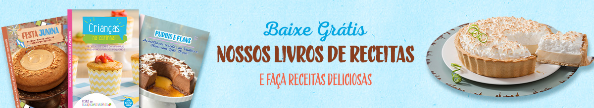

Receita de Pudim de Leite condensado MOÇA com calda de caramelo
A Mousse de Chocolate é um doce que combina de segunda a domingo no seu cardápio e pode servir tanto como aquela pausa para adoçar seu dia, ou, na sobremesa após o almoço! Quem nunca foi surpreendido em uma refeição em família com aquela mousse geladinha de sobremesa? Humm! Receita boa é aquela que desperta esse sentimento de nostalgia, por isso, você irá conferir mais detalhes e curiosidades sobre essa sobremesa tão popular. Você verá que com poucos ingredientes é possível preparar uma Mousse de Chocolate incrível, além de algumas dicas e combinações que pode testar na hora de incrementar sua receita.
Geladinho, leve e aerado como uma espuma? Não tem como não pensar em uma mousse ao ler esses adjetivos. Como a própria palavra sugere "Mousse" é uma sobremesa francesa datada de meados do século XIX, quando os sistemas de refrigeração começaram a se popularizar pelo mundo. Neste mesmo período os franceses eram grandes entusiastas do uso do chocolate na cozinha e buscavam novas maneiras de aproveitar o ingrediente. Foi em meio a esse ambiente de descobertas culinárias que a Mousse de Chocolate teve sua criação, e a autoria foi das mais inesperadas: o artista pós-impressionista francês Henri Toulouse-Lautrec, que utilizava o tempo livre para criar seus próprios pratos, e assim, nasceu o prato que nomeou de "Maionese de Chocolate", devido a mistura de claras de ovos e o chocolate, porém, logo ganhou popularidade como Mousse de Chocolate.
Hoje, já existem inúmeras maneiras de experimentar uma Mousse de Chocolate, devido sua versatilidade é possível realizar combinações com frutas como: morangos, uvas e pêssegos ou até mesmo preparar outros sabores de mousse, alguns exemplos são as receitas de Mousse de Maracujá , Mousse de Goiaba e a deliciosa Mousse de Frutas Silvestres . Quer mais algumas sugestões? Descubra outras alternativas ao Mousse de Chocolate que você encontra aqui em Receitas Nestlé: Se você não dispensa uma dose de café nas suas receitas, pode adicionar um pouquinho na sua mousse preparando essa deliciosa Mousse de Café. Ou quem sabe você prefira dar um toque cítrico com nossa Mousse de Limão, , você irá se surpreender com a textura! Uma alternativa que inclui frutas é nosso Espumoni de Galak e Figo , sua consistência é ainda mais leve que a mousse tradicional. Mas, se você for do time zero açúcar, pode se deliciar com nossa Mousse de Chocolate Zero, sem nem um pingo de culpa.
Se você em algum momento teve receio de preparar uma mousse de Chocolate e não "dar bom", não se preocupe! Com as dicas que selecionamos a seguir você se tornará um(a) mestre(a) no preparo de mousses de qualquer tipo.
Receita anotada? Agora você tem uma opção de sobremesa deliciosa e de poucos ingredientes para adoçar o seu dia e da família toda! Só não esqueça de tirar uma foto e marcar a gente no Instagram (@receitasnestle) quando fizer essa gostosura. Bom apetite!
Nessa receita, não é possível substituir o Chocolate em tablete (barra) por nenhum achocolatado ou chocolate em pó. Além do sabor, o chocolate em barra ajuda na estruturação da mousse, e fazendo uma simples substituição, o resultado final não será satisfatório.
A aeração da mousse é resultado da correta preparação de sua base, que nesse caso são as claras que ao serem batidas incorporam ar. Não existe modo de aumentar essa areação, mas seguindo o modo de preparo corretamente (aquecimento, batedeira e geladeira), garantimos que a mousse ficará aerada.
É preciso sempre respeitar a quantidade de ingredientes e modo de preparo. Por exemplo, se usar menor ou maior quantidade de qualquer um dos ingredientes, a receita ficará desbalanceada, o que pode prejudicar sua estrutura. Outro ponto importante é tomar cuidado para não cozinhar as claras, e para isso é importante aquecer em fogo baixo, respeitar o tempo de aquecimento e a indicação de tirar a panela do fogo de minuto em minuto. Além desses cuidados, o tempo de batedeira e o tempo de geladeira são fundamentais para uma textura perfeita.
Você gostou desta receita? Conte para nós o que achou!
